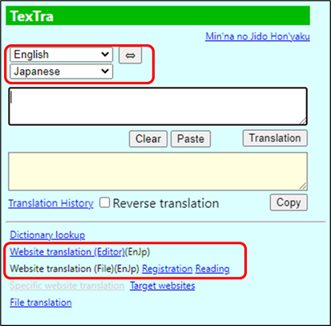
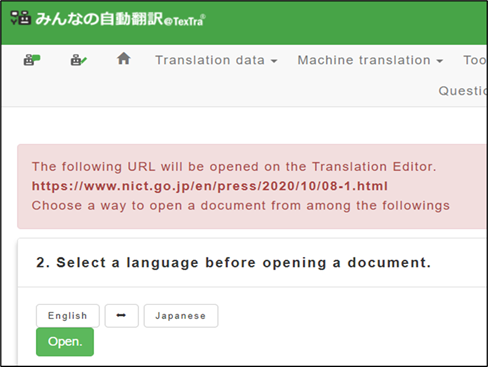

Website Translation
Translate the entire
website.
The
MT results can be manually modified and registered for future
use.
Set
languages before performing this
function.
TexTra
Button > Website
translation

- Website translation
(Editor)
The
Website "Minna no Jidou Honyaku" will
appear.
Specify
the condition
and
click
on the "Open"
button.

- Website translation
(file)
Push
"Registration" button,
then
send the website displaying to "Minna no Jidou Honyaku" and performs
translation.
Push
"Reading" button, then display the list of translation
results.
This
is useful when translate multiple
sites.